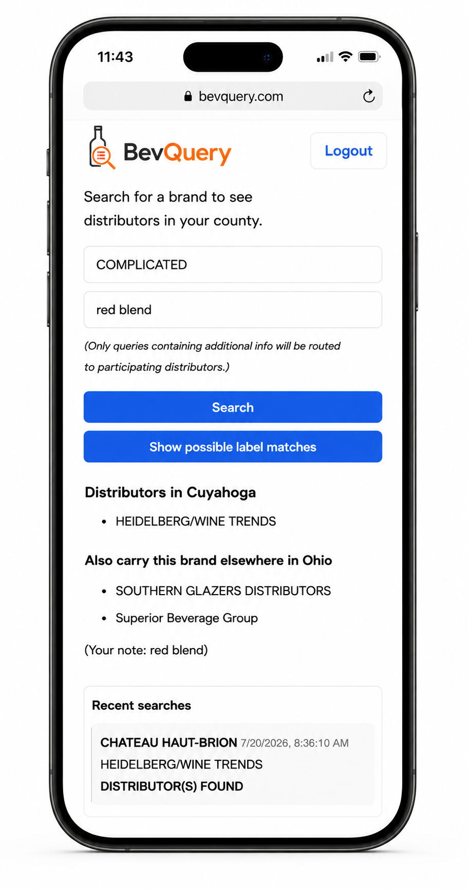
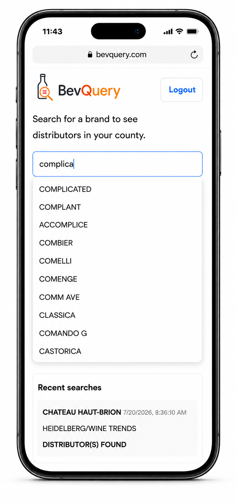
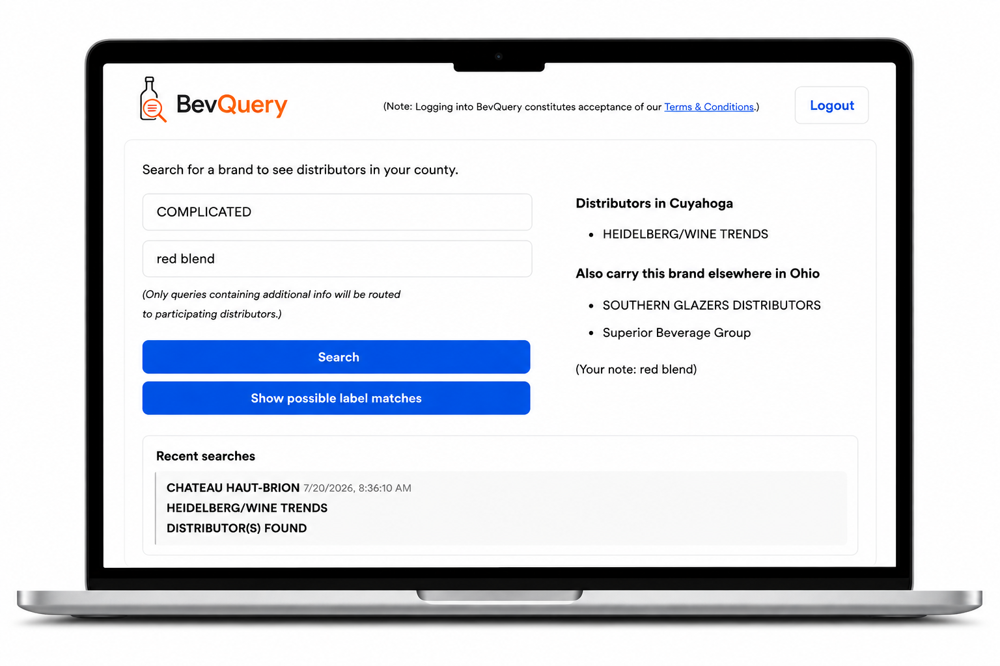
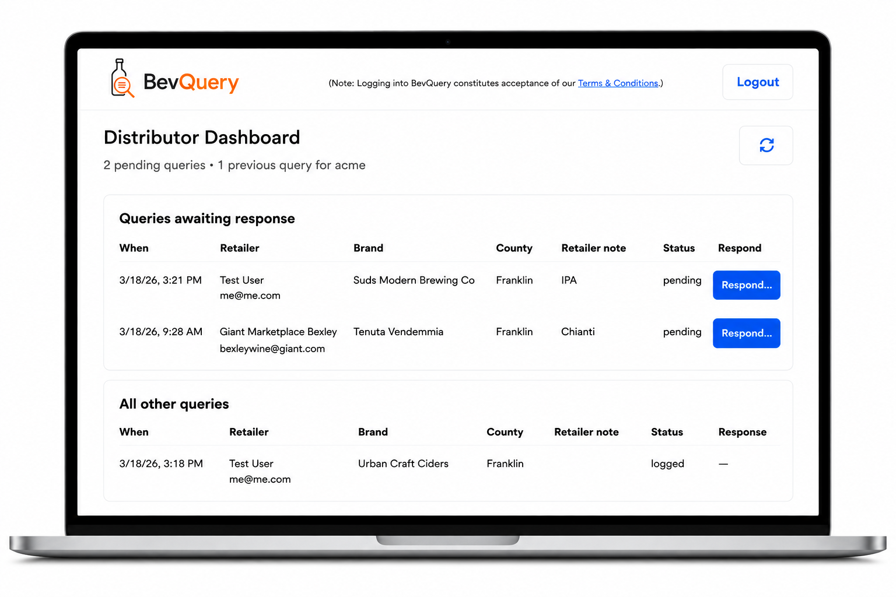

01
Find the right distributor
Search by brand or producer and immediately see who represents it in your location.
Built for beverage retailers
BevQuery helps retailers quickly identify who distributes a beer, wine or other beverage brand/producer in their location—and see who carries it elsewhere in the state.

Less hunting. Faster answers.
Whether you are filling a customer request, placing an order or tracking down a hard-to-find product, BevQuery turns a time-consuming search into a few quick clicks.
Search by brand or producer and immediately see who represents it in your location.
When a brand is carried elsewhere in the state, BevQuery identifies those distributors too.
When additional information is added to a query, the details are sent to participating distributors who can reply with pricing and availability.
How it works
Enter a producer or brand, and BevQuery suggests possible matches as you type, even when the name is incomplete.

Choose the matching listing, add optional identifying details when useful, and submit to search.

BevQuery shows the distributor in your location and, where applicable, distributors that represent the same brand elsewhere in the state.
Built for both sides of the trade
Get a dependable starting point when a customer asks for a product or you are exploring a new brand.
Receive and manage product inquiries from retailers actively searching for brands you represent.

Why BevQuery
BevQuery was created from firsthand experience with how difficult it can be to determine who represents a particular beverage product in a particular location. It does one job, keeps the workflow simple and stays grounded in the way the trade actually works.
No generic CRM. No sprawling enterprise platform. Just a fast way to search current representation data and act on the result.
Frequently asked questions
BevQuery is designed for licensed beverage retailers and participating distributors.
Yes. BevQuery provides statewide coverage.
The representation data is updated monthly.
When a brand is not represented by the same distributor statewide, BevQuery can show distributors that carry it in other parts of the state. This is representation information—not distributor contact information or a list of other brands they carry.
When retailers submit additional information about the product they're looking for, BevQuery automatically submits that request to participating distributors. The distributor can then review and respond from their dashboard with pricing and availability information.
Use the contact page to tell us about your business and request access.
Find the distributor answer faster and get back to serving your customers.
Request BevQuery access